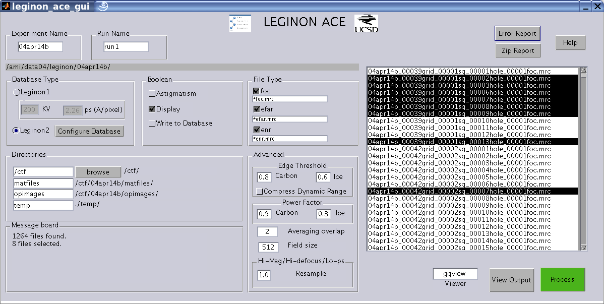

LEGINON ACE DOCUMENTATION

Experiment Name : Name of the experiment. The directory corresponding to the experiment name is shown below the experiment name.
Database Type: The two database types are Leginon1 and Leginon2 . In Leginon1 the Kilovolts (KV) and pixel size (ps) cannot be queried and so the user has to provide that information. Leginon 1 option is not tested extensively. In future versions Leginon 1 will not be supported. The "Configure Database" button allows you to specify your databases.
Boolean:
Astigmatism : Turns on astigmatism estimation. Otherwise circular averaging is done.
Display : Stores graphs for visual inspection of results in output image directory.
Write to Database: Writes the calculated parameters to the database in addition to writing to mat files.
File Type: Choose the file type and the corresponding file filter. The file types foc, efar and enr correspond to focus, far from focus and near to focus respectively.
Directories :
Space 1 : The first space is for the parent directory inside which the output is stored. This directory should exist. You can browse to select a directory.
Space 2 : Directory for mat files. This is a relative path. The complete path is shown on the textbox to it right.
Space 3 : Directory for output images. This is a relative path. The complete path is shown on the textbox to it right.
Space 4: Directory for temporary files. This is a relative path. The complete path is shown on the textbox to it right. If two copies of ACE are run from the same directory. The user should use two different temporary files directory to avoid conflict between the two copies of ACE.
Advanced:
Edge Threshold : The threshold set for edge detection for carbon and ice images. These values should be increased if the more edges detected in the power spectrum than the an elliptically shaped ring. Similarly if no edges are detected, the value should be decreased. Usually one should not need to change these values because ACE searches thru a range of values to get a good threshold.
Compress Dynamic Range: For ice images if the signal to noise ratio looks very good ( i.e. Thon rings are very prominent ) and still the result of edge detection is incorrect, check this option.
Power Factor: This determines the location of the upper cutoff frequency. If you notice that there are ripples visible in the power spectrum even beyond the upper cutoff frequency you can increase this value to accommodate more part of the power spectrum. The value should be decreased if the signal to noise ratio is less and only a few ripples are visible.
Averaging overlap and Field size: Smaller images are cropped from the image (micrograph) given to the program. The power spectrum is found for all small images and they are averaged to improve signal to noise ratio. Field size refers to the width of each small image cropped. An Averaging overlap of "a" implies that the successive images have an overalp of (1-a)*field size. In other words a higher value of Averaging overlap means more number of smaller images are used for averaging. If the signal to noise ratio is very low, the averaging overlap should be changed for better estimate of power spectrum.
Hi-mag/Hi-defocus/Lo-ps: When the defocus is large or the pixel-size is very small ( which is equivalent to Hi-magnification) the first zero of the CTF might be too close to the origin. Increase the value of Resample.
File List box: Shows the list of file of the type selected. A single file can be selected by clicking on the filename. Multiple files can be selected by CTRL+click or (click and drag) and all files can be selected by CTRL+A.
Viewer: The viewer you would like to see your images. If gqview is used, it takes you to the correct output directory. Other viewers (like xv ) are simply launched.
View Output: Launches the viewer.
Process: Starts processing of the selected images.
Help: Displays this page.
Console Output: The console (the command prompt in MATLAB desktop ) displays partial results in the following format. An example is also shown.
|
Filename |
Nominal Defocus |
Crude defocus estimate |
Refined defocus1 estimate |
Refined defocus2 estimate |
Amplitude contrast |
Astigmatism ratio |
Astigmatism angle |
Confidence on results |
|
filename.mrc |
2.000000 |
2.068837 |
1.975 |
2.15 |
0.06 |
0.96 |
55.5 |
0.95 |